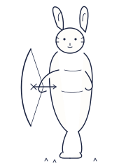

HOME
›
MY PAGE
自分のページを編集
あなた自身の人生を、自分の言葉で残してください。
写真・経歴・想い…すべてご家族や子孫に受け継がれていきます。
公開範囲
は項目ごとに調整できます。

基本情報
経歴・思い出
家族との関係
公開設定
姓
名
ふりがな
表示名
生年月日
出身地
現在お住まいの地域
家族へのひとこと
家族の歴史を一冊にまとめたい、と長年思っていました。みんなで少しずつ書き足していけたら、何より嬉しいです。父・母から聞いた話、祖父母の写真、子どもたちが将来も覚えていてほしいことを、ここに残していきます。
people
父
母
配偶者
子
このページの公開範囲
家族のみ
招待した人のみ
非公開（自分のみ）
プレビュー
変更を保存する